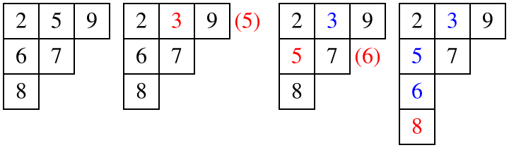

OI Wiki · prijevod · MatematikaOI Wiki · translation · Mathematics
Youngov tabloYoung tableau
Sadržaj
Uvod
Youngov tablo (Young tableau; u kineskoj se literaturi naziva i „Youngova matrica”, 杨氏矩阵), kraće Youngova tablica, kombinatorni je objekt koji se često koristi u teoriji reprezentacija i Schubertovu računu.
Youngov tablo posebna je vrsta matrice. Pogodan je za proučavanje reprezentacija i svojstava simetrične grupe i opće linearne grupe. Youngov tablo prvi je uveo matematičar s Cambridgea Alfred Young 1900. godine, a 1903. ga je njemački matematičar Ferdinand Georg Frobenius primijenio u proučavanju simetričnih grupa.
Napomena
Teorija reprezentacija (representation theory) grana je matematike. Ona proučava apstraktne algebarske strukture tako da njihove elemente prikazuje kao linearne transformacije vektorskih prostora. Schubertov račun (Schubert calculus) grana je algebarske geometrije koju je u 19. stoljeću uveo Hermann Schubert radi rješavanja problema prebrojavanja u projektivnoj geometriji.
Definicije
Youngov dijagram
Youngov dijagram (Young diagram; kad se crta točkama, naziva se i Ferrersov dijagram, o čemu se govori u odjeljku Particije broja) konačan je skup kvadratića ili ćelija poravnatih ulijevo, pri čemu su duljine redaka poredane nerastuće. Ispišemo li broj kvadratića u svakom retku Youngova dijagrama, dobivamo particiju (integer partition) \(\lambda\) nenegativnog cijelog broja \(n\) (ukupnog broja kvadratića). Stoga oblik Youngova dijagrama možemo poistovjetiti s \(\lambda\), jer nosi istu informaciju kao i ta particija.
Relacija sadržavanja među Youngovim dijagramima definira parcijalni uređaj na particijama; taj uređaj ima strukturu rešetke i naziva se Youngova rešetka (Young's lattice). Ispišemo li broj kvadratića u svakom stupcu Youngova dijagrama, dobivamo „konjugiranu particiju” ili „transponiranu particiju” particije \(\lambda\); njoj pripadni Youngov dijagram dobiva se zrcaljenjem izvornog dijagrama s obzirom na glavnu dijagonalu.
Položaj svakog kvadratića Youngova dijagrama određen je dvjema koordinatama koje predstavljaju redak i stupac. Stupci se broje slijeva nadesno, a retci u smjeru od većeg broja kvadratića prema manjem. Ovdje treba paziti da, ovisno o konvenciji, postoje dva različita načina crtanja Youngova dijagrama: u prvom se retci s manje kvadratića crtaju ispod redaka s više kvadratića, a u drugom se retci slažu od najvećeg prema najmanjem sloj po sloj prema gore. Budući da prvi način uglavnom koriste zemlje engleskog govornog područja, a drugi obično zemlje francuskog govornog područja, uobičajeno ih nazivamo engleskom i francuskom notacijom.
U tablici dolje prikazani su različiti načini crtanja Youngova dijagrama koji odgovara particiji \((5,4,1)\):
- engleska notacija:
- francuska notacija:
Youngov tablo
Definicija
Youngov tablo (Young tableau) dobiva se popunjavanjem kvadratića Youngova dijagrama simbolima iz nekog alfabeta, koji obično mora biti totalno uređen skup. Upisane elemente zapisujemo kao \(x_{1}\), \(x_{2}\), \(x_{3}\), \(\ldots\). Radi jednostavnosti, međutim, upisujemo izravno pozitivne cijele brojeve.
Kad su Youngovi tabloi prvi put primijenjeni u teoriji reprezentacija simetrične grupe, u \(n\) kvadratića Youngova dijagrama smjeli su se proizvoljno upisati međusobno različiti pozitivni cijeli brojevi od \(1\) do \(n\). Danas se, međutim, u istraživanjima većinom koriste „standardni” Youngovi tabloi, tj. oni u kojima su, uz gornje uvjete, brojevi u svakom retku i u svakom stupcu strogo rastući. Brojevi različitih Youngovih tabloa s \(n\) kvadratića čine brojeve involucija:
Napomena
Brojevi involucija (involution number / telephone number) cjelobrojni su niz u matematici koji broji načine na koje se \(n\) telefonskih linija može međusobno povezati ako se svaka linija može spojiti s najviše jednom drugom. Oni također opisuju broj sparivanja u potpunom grafu s \(n\) vrhova, broj permutacija \(n\) elemenata koje su involucije, zbroj apsolutnih vrijednosti koeficijenata Hermiteovih polinoma, broj standardnih Youngovih tabloa s \(n\) kvadratića te zbroj stupnjeva ireducibilnih reprezentacija simetrične grupe.
\(1, 1, 2, 4, 10, 26, 76, 232, 764, 2620, 9496, \ldots\) (niz A000085 u OEIS-u)
U drugim primjenama u Youngov dijagram mogu se upisivati i jednaki brojevi. Ako su pri popunjavanju brojevi u istom stupcu strogo rastući, a u istom retku monotono rastući (neopadajući), taj se Youngov tablo naziva polustandardnim (Semistandard Young Tableaux, ponekad i stupčano strogim). Niz koji dobijemo bilježeći koliko se puta svaki broj pojavljuje u Youngovu tablou naziva se težinom Youngova tabloa. Stoga je težina standardnog Youngova tabloa nužno \((1,1,\ldots,1)\), jer se u standardnom Youngovu tablou svaki pozitivan cijeli broj od \(1\) do \(n\) pojavljuje točno jednom.
Algoritam umetanja u standardni Youngov tablo
Svojstva permutacija mogu se zorno prikazati Youngovim tabloima. RSK algoritam umetanja daje način da se Youngovi tabloi povežu s permutacijama. Predložili su ga Robinson, Schensted i Knuth.
Neka je \(S\) Youngov tablo; definiramo \(S \leftarrow x\) kao umetanje elementa \(x\) u Youngov tablo počevši od prvog retka, i to ovako:
- U trenutnom retku pronađi najmanji broj \(y\) koji je veći od \(x\).
- Ako je pronađen, zamijeni \(y\) s \(x\), prijeđi u sljedeći redak, stavi \(x \leftarrow y\) i ponovi korak 1.
- Ako nije pronađen, stavi \(x\) na kraj tog retka i završi. Neka je \(x\) u \(s\)-tom retku i \(t\)-tom stupcu; \((s, t)\) nužno je kutno polje. Polje \((s, t)\) kutno je ako i samo ako ne postoje ni polje \((s + 1, t)\) ni polje \((s, t + 1)\).
Na primjer, koraci umetanja broja \(3\) u Youngov tablo \((2, 5, 9)(6, 7)(8)\) jesu:

Varijante
Postoje mnoge varijante (variations) Youngovih tabloa koji nisu potpuno strogo standardni. Na primjer, retčano strogi Youngov tablo zahtijeva da brojevi u istom retku budu strogo rastući, a u istom stupcu monotono rastući, tj. on je konjugat stupčano strogog Youngova tabloa. Osim toga, u teoriji ravninskih particija (plane partitions) uobičajeno je da se „rastući” u gornjoj definiciji zamijeni s „padajući”. Druge varijante, primjerice vrpčasti Youngovi tabloi, najprije grupiraju neke kvadratiće u skupine, a zatim zahtijevaju da se u kvadratiće iste skupine upiše jednak broj.
Kosi Youngov tablo
Zadana su dva Youngova dijagrama \(\lambda = (\lambda{1}, \lambda{2} \ldots)\) i \(\mu = (\mu{1}, \mu{2},\ldots)\) takva da \(\lambda\) sadrži \(\mu\), tj. \(\mu{i} \leq \mu{i}\) za sve \(i\). Definiramo „kosi Youngov dijagram” \(\lambda/\mu\) kao skup svih kvadratića dijagrama \(\lambda\) bez svih kvadratića dijagrama \(\mu\), tj. kao razliku skupova \(\lambda\) i \(\mu\). Upišemo li elemente u kvadratiće kosog Youngova dijagrama, dobivamo kosi Youngov tablo (skew tableaux).
Na primjer, slika dolje prikazuje jedan standardni kosi Youngov tablo koji odgovara particiji \((5,4,1)\):
Analogno, ako su brojevi u istom stupcu strogo rastući, a u istom retku monotono rastući, kosi Youngov tablo naziva se polustandardnim kosim Youngovim tabloom; ako su u polustandardnom kosom Youngovu tablou u kvadratiće bez ponavljanja upisani brojevi od \(1\) do \(n\) (ukupnog broja kvadratića), kosi Youngov tablo naziva se standardnim kosim Youngovim tabloom. Uočimo da različiti \(\lambda\) i \(\mu\) mogu dati isti \(\lambda/\mu\). Iako većina svojstava kosih Youngovih tabloa ovisi samo o kvadratićima preostalim nakon oduzimanja, neke operacije ipak ovise o izboru \(\lambda\) i \(\mu\). Stoga \(\lambda/\mu\) treba shvaćati kao da sadrži informaciju o dvama elementima: \(\lambda\) i \(\mu\). Kad je \(\mu\) prazna particija (jedina particija broja \(0\)), kosi Youngov tablo \(\lambda/\mu\) postaje Youngov tablo \(\lambda\).
Primjene
Youngovi tabloi često se koriste u kombinatorici, teoriji reprezentacija i algebarskoj geometriji, gdje se raznim načinima prebrojavanja Youngovih tabloa dobivaju definicija Schurovih funkcija i s njima povezani identiteti. Na informatičkim natjecanjima često se pojavljuju zadaci koji ispituju formulu duljine kuke za Youngove tabloe.
Duljina kuke
Zadan je Youngov tablo \(\pi_{\lambda}\) s ukupno \(n\) kvadratića; brojeve od \(1\) do \(n\), njih \(n\), upisujemo u tablo tako da su rastući u svakom retku slijeva nadesno i u svakom stupcu odozdo prema gore. Broj takvih popunjavanja označavamo \(dim_{\pi_{\lambda}}\).
Za kvadratić \(v\) Youngova tabloa definiramo njegovu duljinu kuke \(\mathrm{hook}(v)\) kao broj kvadratića desno od njega u istom retku plus broj kvadratića iznad njega u istom stupcu, plus 1 (sam kvadratić).
Formula duljine kuke
Ako broj takvih popunjavanja označimo \(dim_{\lambda}\), formula duljine kuke kaže da je broj popunjavanja jednak \(n!\) podijeljenom s umnoškom duljina kuka svih kvadratića.
Stoga za Youngov tablo particije \(10 = 5 + 4 + 1\), prikazan na slici gore, imamo
popunjavanja.
Primjeri zadataka
Zadaci o podnizovima
Za Youngov tablo \(P\) definiran za permutaciju \(X = x_{1}, \ldots , x_{n}\) brojeva od \(1\) do \(n\) vrijedi:
-
Duljina prvog retka tabloa \(P_{X}\) jednaka je duljini najduljeg rastućeg podniza (LIS) permutacije \(X\). Uočimo da prvi redak tabloa \(P\) ne mora biti sam LIS, pa se svojstva Youngova tabloa ne mogu izravno koristiti za rješavanje zadataka poput „podjele na LIS-ove”.
-
Za permutaciju \(X\) i Youngov tablo \(P_{X}\) koji ona daje, ako je \(X^R\) obrat permutacije \(X\), Youngov tablo \(P_{X^R}\) koji daje \(X^R\) dobiva se iz \(P_{X}\) zamjenom redaka i stupaca.
Na primjer, za permutacije \(X = 1, 5, 7, 2, 8, 6, 3, 4\) i \(X^R = 4, 3, 6, 8, 2, 7, 5, 1\) dobivamo sljedeći Youngov tablo \(P_{X}\):
-
Duljina prvog stupca Youngova tabloa \(P_{X}\) jednaka je duljini najduljeg padajućeg podniza (LDS) permutacije \(X\).
Definiramo \(LIS/LDS\) duljine najviše \(k\) kao \(k-LIS\) i \(k-LDS\); i takve zadatke možemo rješavati Youngovim tabloima. Za \(1-LIS\) očito je najdulji \(1-LIS\) podniz upravo \(LDS\) tog niza, a to je upravo prvi stupac Youngova tabloa; slično dobivamo da je duljina prvih \(k\) stupaca Youngova tabloa jednaka duljini najduljeg \(k-LIS\) podniza. Dokaz slijedi:
Za permutaciju \(X\) i njezin Youngov tablo \(P\) s \(m\) redaka neka je permutacija \(X^∗\) jednaka \((P_{m,1}\ldots,P_{m,λ_{m}},P_{m−1,1}\ldots,P_{1,1}\ldots P_{1,λ_{1}})\) (tj. retke Youngova tabloa odozdo prema gore redom zapišemo jedan za drugim). Tada se \(X\) zamjenama sigurno može pretvoriti u \(X^*\).
Stoga se duljina najduljeg \(k-LIS\) podniza može izraziti kao \(F(k)=\sum_{i=1}^{m} \min(k,\lambda_{i})\), tj. kao zbroj duljina prvih \(k\) stupaca.
CTSC2017 最长上升子序列 (Najdulji rastući podniz)
Zadan je niz \(b\) duljine \(n\). Za niz \(B_{m} = (b_{1}, b_{2},\ldots, b_{m})\) neka je \(C\) podniz niza \(B_{m}\) takav da duljina najduljeg rastućeg podniza niza \(C\) ne prelazi \(k\); traži se najveća moguća duljina niza \(C\).
Ideja rješenja
Zbog više upita razmotrimo metodu sweep linea. Tada moramo održavati Youngov tablo svakog prefiksa. Uporabom gornjih zaključaka vidimo da se problem svodi na brzo održavanje zbroja duljina prvih \(k\) stupaca Youngova tabloa. Održavamo li ga izravno, složenost je \(O(n^2 \log n)\), što je neprihvatljivo. Razmotrimo održavanje prvih \(\sqrt{n}\) stupaca i prvih \(\sqrt{n}\) redaka.
Može se uočiti da Youngov tablo sigurno ne pokriva potpuno taj pravokutnik \(W \times H\). Ako je \(K \leq W\), odgovor dobivamo izravno; ako je \(K > W\), dio veći od \(W\) sigurno se nalazi unutar \(H\) redaka. Stoga možemo razmotriti kako istodobno održavati prvih \(\sqrt{n}\) stupaca i prvih \(\sqrt{n}\) redaka. Obratom permutacije dobivamo obrat Youngova tabloa, pa je dovoljno istodobno održavati još i \(-A_{i}\); složenost je \(O(n \sqrt{n} \log n)\).
BJWC2018 最长上升子序列 (Najdulji rastući podniz)
Zadana je slučajna permutacija duljine \(n\); odredite očekivanu duljinu njezina najduljeg rastućeg podniza.
CF1268B 杨氏多米诺骨牌 (Domine u Youngovu dijagramu)
Zadan je histogram s \(n\) stupaca duljina \(a_{1} ,a_{2},\ldots,a_{n}\,(a_{1} \geq a_{2} \geq \ldots \geq a_{n} \geq 1)\), tj. Youngov dijagram za \(a=[3,2,2,2,1]\). Odredite najveći broj domina (pravokutnika \(1 \times 2\) ili \(2 \times 1\)) koje se bez preklapanja mogu nacrtati u tom histogramu.
Literatura i dodatno štivo
- Young Tableau - from Wolfram MathWorld
- Young tableau - Wikipedia
- Hook length formula - Wikipedia
- Yuan Fangzhou, 《浅谈杨氏矩阵在信息学竞赛中的应用》(O primjeni Youngovih tabloa na informatičkim natjecanjima) IOI2019, zbornik radova kineske nacionalne kandidatske ekipe, 202–229
Contents
Introduction
A Young tableau (in Chinese literature also called a "Young matrix", 杨氏矩阵), or Young table for short, is a combinatorial object commonly used in representation theory and Schubert calculus.
A Young tableau is a special kind of matrix. It is convenient for studying the group representations and properties of the symmetric group and the general linear group. Young tableaux were first introduced by the Cambridge mathematician Alfred Young in 1900, and in 1903 the German mathematician Ferdinand Georg Frobenius applied them to the study of symmetric groups.
Note
Representation theory is a branch of mathematics. It studies abstract algebraic structures by representing their elements as linear transformations of vector spaces. Schubert calculus is a branch of algebraic geometry introduced in the 19th century by Hermann Schubert in order to solve counting problems in projective geometry.
Definitions
Young diagrams
A Young diagram (also called a Ferrers diagram when drawn with dots; it is discussed in the section Integer partitions) is a finite collection of boxes or cells arranged in left-justified rows, with the row lengths in non-increasing order. Listing the number of boxes in each row of a Young diagram gives an integer partition \(\lambda\) of a non-negative integer \(n\) (the total number of boxes). Thus we can regard the shape of the Young diagram as \(\lambda\), since it carries the same information as that integer partition.
Containment of Young diagrams defines a partial order on integer partitions; this order has the structure of a lattice and is called Young's lattice. Listing the number of boxes in each column of a Young diagram gives the "conjugate partition" or "transpose partition" of the integer partition \(\lambda\); its Young diagram is obtained by reflecting the original Young diagram along the main diagonal.
The position of each box in a Young diagram is determined by two coordinates representing the row and the column. Columns are ordered from left to right, and rows are ordered from the row with the most boxes to the one with the fewest. Note that, depending on convention, there are two different ways of drawing Young diagrams: the first places rows with fewer boxes below rows with more boxes, while the second stacks the rows from the largest to the smallest layer by layer upward. Since the former is mainly used by English-speaking countries and the latter is usually used by French-speaking countries, they are customarily called the English notation and the French notation respectively.
The table below shows the different ways of drawing the Young diagram corresponding to the integer partition \((5,4,1)\):
- English notation:
- French notation:
Young tableaux
Definition
A Young tableau is obtained by filling the boxes of a Young diagram with symbols taken from some alphabet, which is usually required to be a totally ordered set. The filled-in elements are written as \(x_{1}\), \(x_{2}\), \(x_{3}\), \(\ldots\). For convenience, however, we simply fill in positive integers.
When Young tableaux were first applied to the representation theory of the symmetric group, the \(n\) boxes of the Young diagram could be filled arbitrarily with distinct positive integers from \(1\) to \(n\). Nowadays, however, most research uses "standard" Young tableaux, i.e. those in which, in addition to the above conditions, the numbers in each row and each column are strictly increasing. The numbers of distinct Young tableaux with \(n\) boxes form the involution numbers:
Note
The involution numbers (telephone numbers) are an integer sequence in mathematics that counts the number of ways \(n\) telephone lines can be connected to each other when each line can be connected to at most one other line. They also describe the number of matchings in a complete graph on \(n\) vertices, the number of permutations of \(n\) elements that are involutions, the sum of the absolute values of the coefficients of the Hermite polynomials, the number of standard Young tableaux with \(n\) cells, and the sum of the degrees of the irreducible representations of the symmetric group.
\(1, 1, 2, 4, 10, 26, 76, 232, 764, 2620, 9496, \ldots\) (sequence A000085 in the OEIS)
In other applications, a Young diagram may also be filled with repeated numbers. If the filling has strictly increasing numbers in each column and weakly increasing numbers in each row, the Young tableau is called semistandard (Semistandard Young Tableaux, sometimes called column-strict). The sequence obtained by recording the number of times each number appears in the Young tableau is regarded as the weight of the Young tableau. Hence the weight of a standard Young tableau is necessarily \((1,1,\ldots,1)\), because in a standard Young tableau every positive integer from \(1\) to \(n\) appears exactly once.
Insertion algorithm for standard Young tableaux
Properties of permutations can be visualized through Young tableaux. The RSK insertion algorithm provides a way to relate Young tableaux to permutations. It was proposed by Robinson, Schensted and Knuth.
Let \(S\) be a Young tableau; define \(S \leftarrow x\) as inserting \(x\) into the Young tableau starting from the first row, as follows:
- In the current row, find the smallest number \(y\) greater than \(x\).
- If one is found, replace \(y\) with \(x\), move to the next row, set \(x \leftarrow y\) and repeat step 1.
- If none is found, place \(x\) at the end of this row and stop. Say \(x\) is in row \(s\), column \(t\); then \((s, t)\) must be a corner. A cell \((s, t)\) is a corner if and only if neither \((s + 1, t)\) nor \((s, t + 1)\) contains a cell.
For example, the steps of inserting \(3\) into the Young tableau \((2, 5, 9)(6, 7)(8)\) are:
Variations
There are many variations of Young tableaux that are not fully strictly standard. For example, row-strict Young tableaux require the numbers in each row to be strictly increasing and the numbers in each column to be weakly increasing, i.e. they are the conjugates of column-strict Young tableaux. Moreover, in the theory of plane partitions it is customary to replace "increasing" in the above definition by "decreasing". Other variations, such as ribbon tableaux, first group some boxes together and then require the boxes of each group to be filled with the same number.
Skew tableaux
Given two Young diagrams \(\lambda = (\lambda{1}, \lambda{2} \ldots)\) and \(\mu = (\mu{1}, \mu{2},\ldots)\) such that \(\lambda\) contains \(\mu\), i.e. \(\mu{i} \leq \mu{i}\) for all \(i\), define the "skew Young diagram" \(\lambda/\mu\) as all boxes of \(\lambda\) minus all boxes of \(\mu\), i.e. the set difference of \(\lambda\) and \(\mu\). Filling the boxes of a skew Young diagram with elements gives a skew tableau (skew tableaux).
For example, the figure below shows a standard skew tableau corresponding to the integer partition \((5,4,1)\):
Similarly, if the numbers in each column are strictly increasing and the numbers in each row are weakly increasing, the skew tableau is called a semistandard skew tableau; if a semistandard skew tableau has the numbers \(1\) to \(n\) (the total number of boxes) filled in without repetition, the skew tableau is called a standard skew tableau. Note that different \(\lambda\) and \(\mu\) can give the same \(\lambda/\mu\). Although most properties of skew tableaux depend only on the boxes remaining after taking the difference, some operations still depend on the choice of \(\lambda\) and \(\mu\). Therefore \(\lambda/\mu\) must be regarded as containing information about two elements: \(\lambda\) and \(\mu\). When \(\mu\) is the empty partition (the unique partition of \(0\)), the skew tableau \(\lambda/\mu\) becomes the Young tableau \(\lambda\).
Applications
Young tableaux are often used in combinatorics, representation theory and algebraic geometry, where various ways of counting Young tableaux yield the definition of Schur functions and related identities. In informatics competitions, problems testing the hook length formula for Young tableaux appear frequently.
Hook length
Given a Young tableau \(\pi_{\lambda}\) with \(n\) boxes in total, fill the \(n\) numbers from \(1\) to \(n\) into the tableau so that each row is increasing from left to right and each column is increasing from bottom to top. Let \(dim_{\pi_{\lambda}}\) denote the number of such fillings.
For a box \(v\) in a Young tableau, define its hook length \(\mathrm{hook}(v)\) as the number of boxes to its right in the same row plus the number of boxes above it in the same column, plus 1 (the box itself).
Hook length formula
If \(dim_{\lambda}\) denotes the number of such fillings, the hook length formula states that the number of fillings equals \(n!\) divided by the product of the hook lengths of all boxes.
So for the Young tableau of the integer partition \(10 = 5 + 4 + 1\), shown in the figure above, there are
fillings.
Example problems
Subsequence problems
For the Young tableau \(P\) defined for a permutation \(X = x_{1}, \ldots , x_{n}\) of \(1\) to \(n\):
-
The length of the first row of \(P_{X}\) is the length of the longest increasing subsequence (LIS) of the permutation \(X\). Note that the first row of \(P\) is not necessarily the LIS itself, so the properties of Young tableaux cannot be used directly to solve problems like "LIS partitioning".
-
For a permutation \(X\) and the Young tableau \(P_{X}\) it produces, if \(X^R\) is the reversal of \(X\), then the Young tableau \(P_{X^R}\) produced by \(X^R\) is \(P_{X}\) with rows and columns swapped.
For example, for the permutations \(X = 1, 5, 7, 2, 8, 6, 3, 4\) and \(X^R = 4, 3, 6, 8, 2, 7, 5, 1\), we obtain the following Young tableau \(P_{X}\):
-
The length of the first column of the Young tableau \(P_{X}\) is the length of the longest decreasing subsequence (LDS) of the permutation \(X\).
Define an \(LIS/LDS\) of length at most \(k\) as a \(k-LIS\) and \(k-LDS\); such problems can also be solved with Young tableaux. For \(1-LIS\), obviously the longest \(1-LIS\) subsequence is the \(LDS\) of the sequence, which is exactly the first column of the Young tableau; similarly, the total length of the first \(k\) columns of the Young tableau is the length of the longest \(k-LIS\) subsequence. The proof is as follows:
For a permutation \(X\) and its Young tableau \(P\) with \(m\) rows, let the permutation \(X^∗\) be \((P_{m,1}\ldots,P_{m,λ_{m}},P_{m−1,1}\ldots,P_{1,1}\ldots P_{1,λ_{1}})\) (i.e. write the rows of the Young tableau one after another from bottom to top). Then \(X\) can certainly be transformed into \(X^*\) by swap operations.
Hence the length of the longest \(k-LIS\) subsequence can be expressed as \(F(k)=\sum_{i=1}^{m} \min(k,\lambda_{i})\), i.e. the total length of the first \(k\) columns.
CTSC2017 最长上升子序列 (Longest Increasing Subsequence)
There is a sequence \(b\) of length \(n\). For the sequence \(B_{m} = (b_{1}, b_{2},\ldots, b_{m})\), let \(C\) be a subsequence of \(B_{m}\) such that the length of the longest increasing subsequence of \(C\) does not exceed \(k\); find the maximum length of \(C\).
Solution idea
With multiple queries, consider the sweep line method. Then we need to maintain the Young tableau of every prefix. Using the conclusions above, the problem becomes how to quickly maintain the total length of the first \(k\) columns of the Young tableau. Maintaining it directly has complexity \(O(n^2 \log n)\), which is unacceptable. Consider maintaining the first \(\sqrt{n}\) columns and the first \(\sqrt{n}\) rows.
One can see that the Young tableau certainly does not completely cover this \(W \times H\) rectangle. If \(K \leq W\), the answer is obtained directly; if \(K > W\), the part beyond \(W\) must lie within the \(H\) rows. So we can consider how to maintain the first \(\sqrt{n}\) columns and the first \(\sqrt{n}\) rows at the same time. Reversing the permutation gives the reversal of the Young tableau, so it suffices to also maintain \(-A_{i}\) at the same time; the complexity is \(O(n \sqrt{n} \log n)\).
BJWC2018 最长上升子序列 (Longest Increasing Subsequence)
Given a random permutation of length \(n\), find the expected length of its longest increasing subsequence.
CF1268B 杨氏多米诺骨牌 (Domino for Young)
You are given a histogram with \(n\) columns of lengths \(a_{1} ,a_{2},\ldots,a_{n}\,(a_{1} \geq a_{2} \geq \ldots \geq a_{n} \geq 1)\), i.e. the Young diagram of \(a=[3,2,2,2,1]\). Find the maximum number of non-overlapping dominoes (\(1 \times 2\) or \(2 \times 1\) rectangles) that can be drawn inside this histogram.
References and further reading
- Young Tableau - from Wolfram MathWorld
- Young tableau - Wikipedia
- Hook length formula - Wikipedia
- Yuan Fangzhou, 《浅谈杨氏矩阵在信息学竞赛中的应用》(On the Application of Young Tableaux in Informatics Competitions) IOI2019, Chinese National Team Candidates' Papers Collection, 202–229